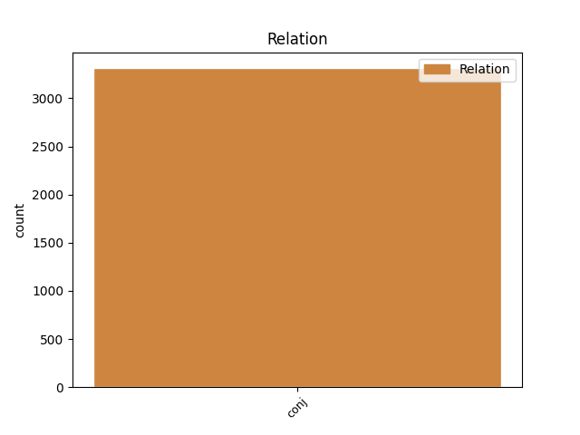
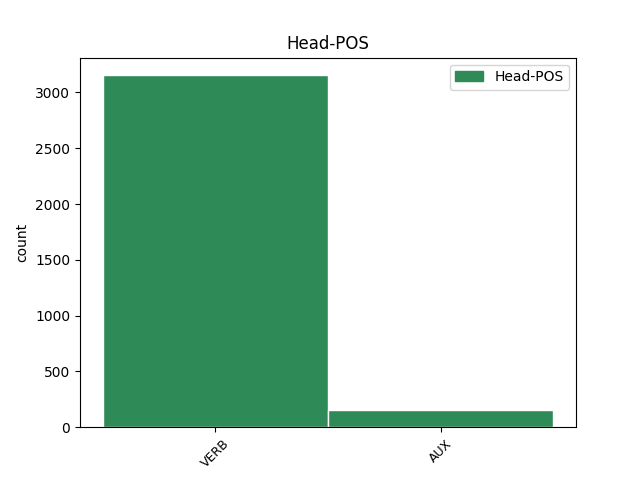

Distribution of features within this leaf


Agreement Rules sorted by frequency.
- When the dependent token is the conjunct(conj) of the head token,
1 ὁ _ _ _ _ 0 _ _ _
2 ἀδικῶν _ _ _ _ 0 _ _ _
3 ἀδικησάτω _ _ _ _ 0 _ _ _
4 ἔτι _ _ _ _ 0 _ _ _
5 καὶ _ _ _ _ 0 _ _ _
6 ὁ _ _ _ _ 0 _ _ _
7 ῥυπαρὸς _ _ _ _ 0 _ _ _
8 ῥυπανθήτω _ _ _ _ 0 _ _ _
9 ἔτι _ _ _ _ 0 _ _ _
10 καὶ _ _ _ _ 0 _ _ _
11 ὁ _ _ _ _ 0 _ _ _
12 δίκαιος _ _ _ _ 0 _ _ _
13 δικαιοσύνην _ _ _ _ 0 _ _ _
14 ποιησάτω ποιέω VERB V- Aspect=Perf|Mood=Imp|Number=Sing|Person=3|Tense=Past|VerbForm=Fin|Voice=Act 0 _ _ _
15 ἔτι _ _ _ _ 0 _ _ _
16 καὶ _ _ _ _ 0 _ _ _
17 ὁ _ _ _ _ 0 _ _ _
18 ἅγιος _ _ _ _ 0 _ _ _
19 ἁγιασθήτω ἁγιάζω VERB V- Aspect=Perf|Mood=Imp|Number=Sing|Person=3|Tense=Past|VerbForm=Fin|Voice=Pass 14 conj _ ref=REV_22.11
20 ἔτι _ _ _ _ 0 _ _ _
Disagree Examples:
1 λιπαρεόντων _ _ _ _ 0 _ _ _
2 δὲ _ _ _ _ 0 _ _ _
3 αὐτῶν _ _ _ _ 0 _ _ _
4 καὶ _ _ _ _ 0 _ _ _
5 ὄχλον _ _ _ _ 0 _ _ _
6 παρεχόντων _ _ _ _ 0 _ _ _
7 ἔλεγε _ _ _ _ 0 _ _ _
8 δὴ _ _ _ _ 0 _ _ _
9 ὡς _ _ _ _ 0 _ _ _
10 ἦλθε ἔρχομαι VERB V- Aspect=Perf|Mood=Ind|Number=Sing|Person=3|Tense=Past|VerbForm=Fin|Voice=Act 0 _ _ _
11 ἀρχὴν _ _ _ _ 0 _ _ _
12 ὁ _ _ _ _ 0 _ _ _
13 Σόλων _ _ _ _ 0 _ _ _
14 ἐὼν _ _ _ _ 0 _ _ _
15 Ἀθηναῖος _ _ _ _ 0 _ _ _
16 καὶ _ _ _ _ 0 _ _ _
17 θεησάμενος _ _ _ _ 0 _ _ _
18 πάντα _ _ _ _ 0 _ _ _
19 τὸν _ _ _ _ 0 _ _ _
20 ἑωυτοῦ _ _ _ _ 0 _ _ _
21 ὄλβον _ _ _ _ 0 _ _ _
22 ἀποφλαυρίσειε ἀποφλαυρίζω VERB V- Aspect=Perf|Mood=Opt|Number=Sing|Person=3|Tense=Past|VerbForm=Fin|Voice=Act 10 conj _ ref=1.86.5
23 οἷα _ _ _ _ 0 _ _ _
24 δὴ _ _ _ _ 0 _ _ _
25 εἶπας _ _ _ _ 0 _ _ _
26 ὥς _ _ _ _ 0 _ _ _
27 τε _ _ _ _ 0 _ _ _
28 αὐτῷ _ _ _ _ 0 _ _ _
29 πάντα _ _ _ _ 0 _ _ _
30 ἀποβεβήκοι _ _ _ _ 0 _ _ _
31 τῇ _ _ _ _ 0 _ _ _
32 περ _ _ _ _ 0 _ _ _
33 ἐκεῖνος _ _ _ _ 0 _ _ _
34 εἶπε _ _ _ _ 0 _ _ _
35 οὐδέν _ _ _ _ 0 _ _ _
36 τι _ _ _ _ 0 _ _ _
37 μᾶλλον _ _ _ _ 0 _ _ _
38 ἐς _ _ _ _ 0 _ _ _
39 ἑωυτὸν _ _ _ _ 0 _ _ _
40 λέγων _ _ _ _ 0 _ _ _
41 ἢ _ _ _ _ 0 _ _ _
42 οὐκ _ _ _ _ 0 _ _ _
43 ἐς _ _ _ _ 0 _ _ _
44 ἅπαν _ _ _ _ 0 _ _ _
45 τὸ _ _ _ _ 0 _ _ _
46 ἀνθρώπινον _ _ _ _ 0 _ _ _
47 καὶ _ _ _ _ 0 _ _ _
48 μάλιστα _ _ _ _ 0 _ _ _
49 τοὺς _ _ _ _ 0 _ _ _
50 παρὰ _ _ _ _ 0 _ _ _
51 σφίσι _ _ _ _ 0 _ _ _
52 αὐτοῖσι _ _ _ _ 0 _ _ _
53 ὀλβίους _ _ _ _ 0 _ _ _
54 δοκέοντας _ _ _ _ 0 _ _ _
55 εἶναι _ _ _ _ 0 _ _ _
1 τρία _ _ _ _ 0 _ _ _
2 γὰρ _ _ _ _ 0 _ _ _
3 ἔτεα _ _ _ _ 0 _ _ _
4 ἐπανεβάλετο ἐπαναβάλλω VERB V- Aspect=Perf|Mood=Ind|Number=Sing|Person=3|Tense=Past|VerbForm=Fin|Voice=Mid 0 _ _ _
5 τὴν _ _ _ _ 0 _ _ _
6 Σαρδίων _ _ _ _ 0 _ _ _
7 ἅλωσιν _ _ _ _ 0 _ _ _
8 καὶ _ _ _ _ 0 _ _ _
9 τοῦτο _ _ _ _ 0 _ _ _
10 ἐπιστάσθω ἐπίσταμαι VERB V- Mood=Imp|Number=Sing|Person=3|Tense=Pres|VerbForm=Fin|Voice=Mid 4 conj _ ref=1.91.3
11 Κροῖσος _ _ _ _ 0 _ _ _
12 ὡς _ _ _ _ 0 _ _ _
13 ὕστερον _ _ _ _ 0 _ _ _
14 τοῖσι _ _ _ _ 0 _ _ _
15 ἔτεσι _ _ _ _ 0 _ _ _
16 τούτοισι _ _ _ _ 0 _ _ _
17 ἁλοὺς _ _ _ _ 0 _ _ _
18 τῆς _ _ _ _ 0 _ _ _
19 πεπρωμένης _ _ _ _ 0 _ _ _
1 ἀλλὰ _ _ _ _ 0 _ _ _
2 γὰρ _ _ _ _ 0 _ _ _
3 περιέχονται περιέχω VERB V- Mood=Ind|Number=Plur|Person=3|Tense=Pres|VerbForm=Fin|Voice=Mid 0 _ _ _
4 τοῦ _ _ _ _ 0 _ _ _
5 οὐνόματος _ _ _ _ 0 _ _ _
6 μᾶλλόν _ _ _ _ 0 _ _ _
7 τι _ _ _ _ 0 _ _ _
8 τῶν _ _ _ _ 0 _ _ _
9 ἄλλων _ _ _ _ 0 _ _ _
10 Ἰώνων _ _ _ _ 0 _ _ _
11 ἔστωσαν εἰμί AUX V- Mood=Imp|Number=Plur|Person=3|Tense=Pres|VerbForm=Fin|Voice=Act 3 conj _ LId=1|ref=1.147.1
12 δὴ _ _ _ _ 0 _ _ _
13 καὶ _ _ _ _ 0 _ _ _
14 οἱ _ _ _ _ 0 _ _ _
15 καθαρῶς _ _ _ _ 0 _ _ _
16 γεγονότες _ _ _ _ 0 _ _ _
17 Ἴωνες _ _ _ _ 0 _ _ _
1 σὺ _ _ _ _ 0 _ _ _
2 μέντοι _ _ _ _ 0 _ _ _
3 μὴ _ _ _ _ 0 _ _ _
4 πάντα _ _ _ _ 0 _ _ _
5 θυμῷ _ _ _ _ 0 _ _ _
6 χρέο χράω VERB V- Mood=Imp|Number=Sing|Person=2|Tense=Pres|VerbForm=Fin|Voice=Mid 0 _ _ _
7 μηδὲ _ _ _ _ 0 _ _ _
8 πόλιν _ _ _ _ 0 _ _ _
9 ἀρχαίην _ _ _ _ 0 _ _ _
10 ἐξαναστήσῃς ἐξανίστημι VERB V- Aspect=Perf|Mood=Sub|Number=Sing|Person=2|Tense=Past|VerbForm=Fin|Voice=Act 6 conj _ ref=1.155.3
11 ἀναμάρτητον _ _ _ _ 0 _ _ _
12 ἐοῦσαν _ _ _ _ 0 _ _ _
13 καὶ _ _ _ _ 0 _ _ _
14 τῶν _ _ _ _ 0 _ _ _
15 πρότερον _ _ _ _ 0 _ _ _
16 καὶ _ _ _ _ 0 _ _ _
17 τῶν _ _ _ _ 0 _ _ _
18 νῦν _ _ _ _ 0 _ _ _
19 ἑστεώτων _ _ _ _ 0 _ _ _
1 ἄλλο _ _ _ _ 0 _ _ _
2 δέ _ _ _ _ 0 _ _ _
3 τι _ _ _ _ 0 _ _ _
4 ἐξευρήκασι _ _ _ _ 0 _ _ _
5 νεωστὶ _ _ _ _ 0 _ _ _
6 γενέσθαι _ _ _ _ 0 _ _ _
7 ἵνα _ _ _ _ 0 _ _ _
8 μὴ _ _ _ _ 0 _ _ _
9 ἀδικοῖεν ἀδικέω VERB V- Mood=Opt|Number=Plur|Person=3|Tense=Pres|VerbForm=Fin|Voice=Act 0 _ _ _
10 αὐτὰς _ _ _ _ 0 _ _ _
11 μηδ’ _ _ _ _ 0 _ _ _
12 εἰς _ _ _ _ 0 _ _ _
13 ἑτέραν _ _ _ _ 0 _ _ _
14 πόλιν _ _ _ _ 0 _ _ _
15 ἄγωνται ἄγω VERB V- Mood=Sub|Number=Plur|Person=3|Tense=Pres|VerbForm=Fin|Voice=Mid 9 conj _ ref=1.196.5